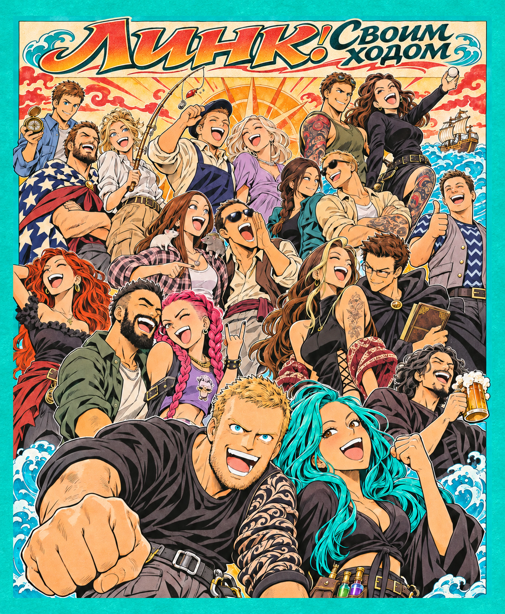

Книга передана в печать!
Наше приключение скоро станет настоящей книгой.
Сценарий
158/158 — 100%
Рисунки
161/161
Поздравления
19/19
ПРИКЛЮЧЕНИЕ НАЧНЁТСЯ СКОРО
Линк. Своим ходом
Вся история откроется 21 ноября в 00:01 по Москве.
До начала приключения
А пока — первый форзац с нашей командой.
К поздравлениям →
ЛИНК. СВОИМ ХОДОМ
Приключение начинается!
Место чтения сохраняется автоматически. На компьютере можно листать стрелками ← →.